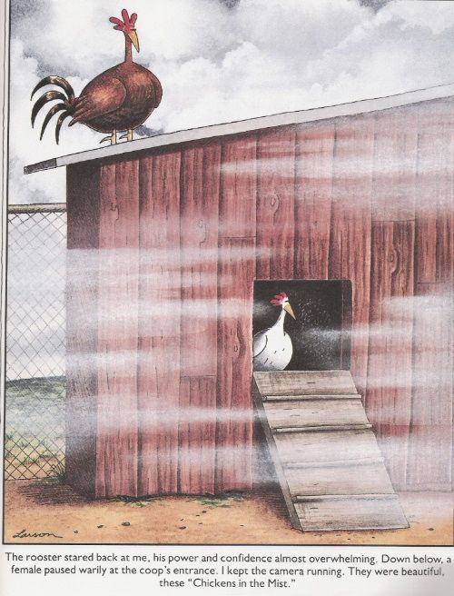
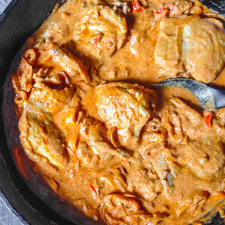

I grew up in a bit of an odd home. My parents are immigrants from Egypt, and although I ate a lot of Egyptian food growing up, my mother also liked to experiment with food from other cultures. I've been meaning to get her recipes down and organized in one place for a while, so here they are!
Mistica Chicken
Mistica chicken is a variation of creamy paprika chicken, with my mother's addition of a very Egyptian flavor: mastic gum.


2 whole chicken breasts cut into medallions
1/2 C flour
2-4 T butter
1 T paprika
1/2 t cayenne
1 large onion, diced
1/2 t mastic gum
juice of 1/2 lime
1/2 C water
1 boullion cube
1/2 C heavy cream
Toss the chicken breasts in flour and lightly brown in 2 T butter. Remove from heat. Add diced onion and cook until golden. Add mastic until melted and blend it with the onions. Return chicken to pan, add paprika and cayenne and stir. Add the water, lime juice, and boullion and stir. By now you should have a thick sauce. Add heavy cream.